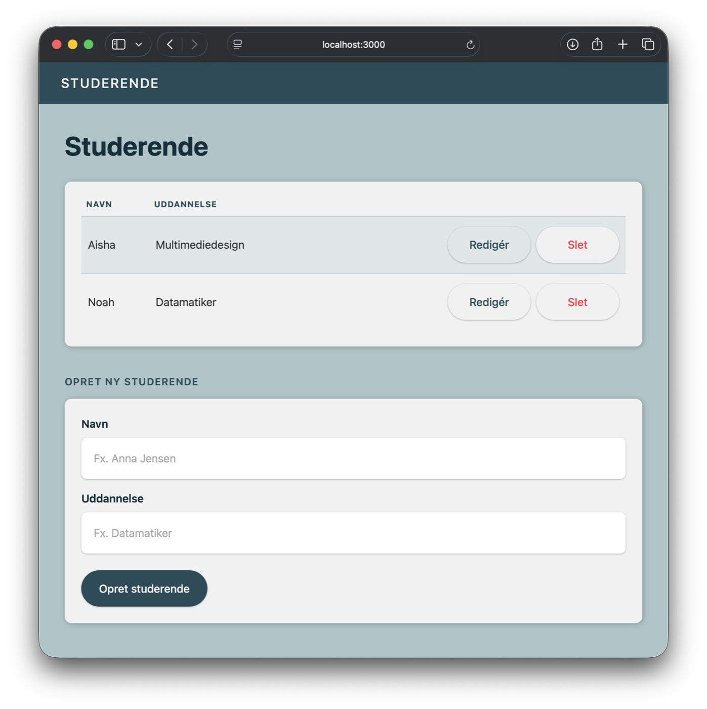
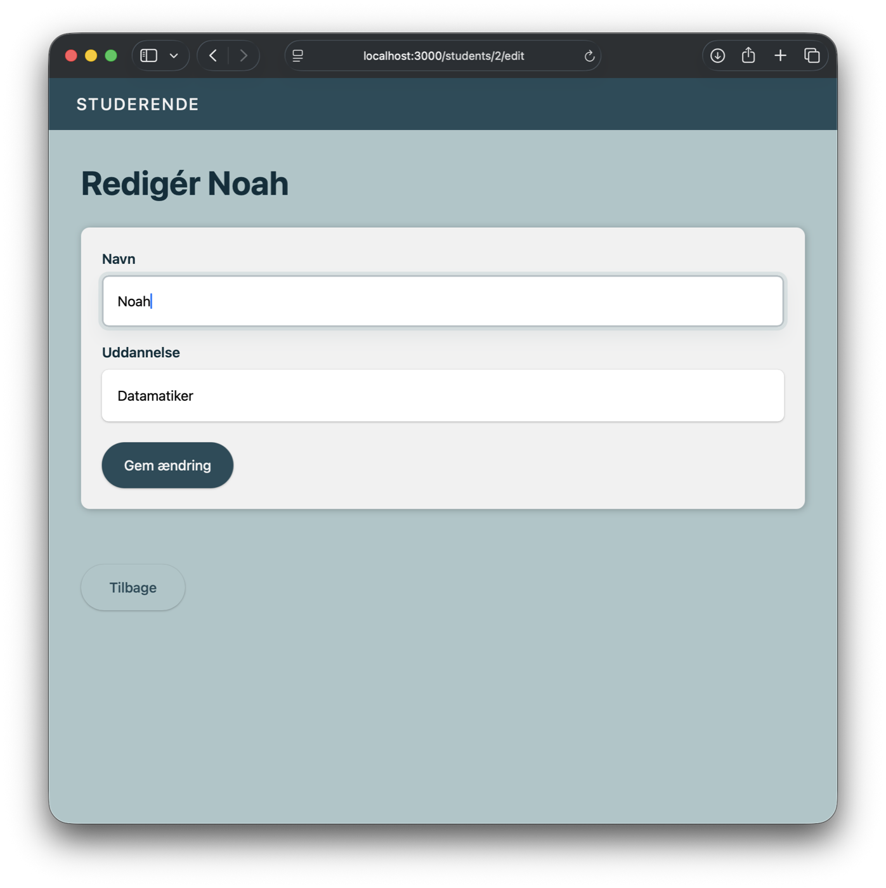
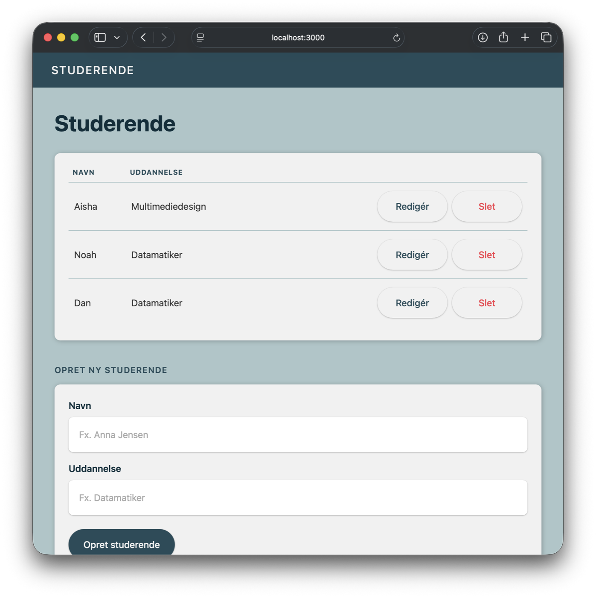
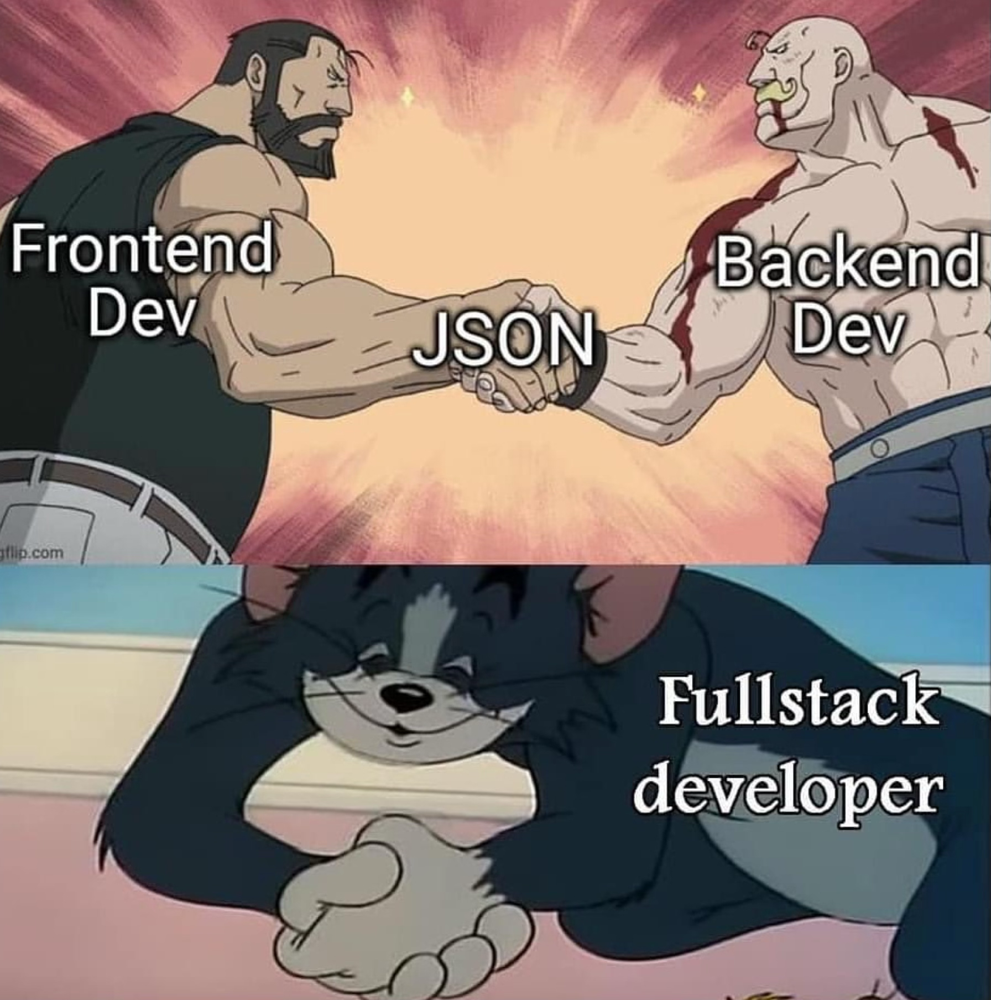

Persistens · JSON · Node.js File System API
race.json is loading...
messages er en almindelig array-variabel
den lever kun, mens Node-processen kører
genstart = tom historik, igen og igen
fs.readFile() + JSON.parse() henter data fra en filJSON.stringify() + fs.writeFile() gemmer ændringer


[
{ "id": 1, "name": "Aisha", "education": "Multimediedesign" },
{ "id": 2, "name": "Noah", "education": "Datamatiker" },
{ "id": 1788866474706, "name": "Dan", "education": "Datamatiker" }
]
Trin 1–7: læs, opret og gem i data/students.json.
Redigering, sletning og styling på billederne er ekstraopgaver.
findBestAnswer(), topicStats og metoderne bagfsmessages.json overlever en genstartPunktnotation, bracket notation og arrays af objekter — den viden bruger I resten af kurset.
{ keywords: [...],
answer: "..." }
JSON.stringify(){"keywords":[...],
"answer":"..."}
{ keywords: [...],
answer: "..." }
JSON repræsenterer blandt andet objekter og arrays som tekst.
Hver liste er et array af objekter, hentet fra en server og vist som UI — samme mønster som
keywords og answers i AMAbotten.
const answers = [ // et array …
{ // … af objekter …
keywords: ["navn", "hedder"], // … der selv indeholder et array
answer: "Jeg hedder Ada."
},
{
keywords: ["bor", "by"],
answer: "Jeg bor i Aarhus."
}
];Arrayen ordnet liste — hvert element kan være en værdi, et objekt eller endnu et array
Objektet sæt af nøgle/værdi-par — en værdi kan selv være et array eller et objekt
answers er selv et bevis: et array af objekter, hvor hvert objekt indeholder et array
(keywords) — sammensætningen kan gå lige så dybt, som data kræver.
To og to: forklar findAnswer() — eller findBestAnswer() og
topicStats, hvis I er nået længere — fra jeres egen kode.
findAnswer() vælger et svar ud fra nøgleord — eller findBestAnswer(), hvis I er nået til øvelse 4?topicStats tæller emner/kategorier i et objekt?toLowerCase()
trim()
includes()
filter()
some()
.length · property
" Hvad HEDDER du? ".trim().toLowerCase()"hvad hedder du?".includes("hedder")truetrim()fjerner mellemrum i start/slut — ny string
toLowerCase()gør alt til små bogstaver — ny string
includes()returnerer en boolean
const normalizedQuestion = question.trim().toLowerCase();
const hasMatch = normalizedQuestion.includes("hedder");.some()
const hasMatch = keywords.some((keyword) =>
normalizedQuestion.includes(keyword)
);Er der mindst ét element, der opfylder betingelsen?
true / falsefindAnswer().filter() + .length
const matches = keywords.filter((keyword) =>
normalizedQuestion.includes(keyword)
);
const score = matches.length;Giv mig et nyt array med alle elementer, der opfylder betingelsen.
2 (et tal)findBestAnswer()
Samme spørgsmål, to svar: .some() siger kun ja/nej — .filter().length tæller
hvor mange.
.some()
const names = ["Mohanad", "Anna", "Tinus", "Rasmus"];
const hasAnna = names.some((name) => name === "Anna");
console.log(hasAnna); // truetrue — én boolean.filter()
const students = [
{ name: "Anna", class: "webA" },
{ name: "Mohanad", class: "webB" },
{ name: "Anna", class: "webB" }
];
const annas = students.filter(
(student) => student.name === "Anna"
);
Samme mønster som keywords.some()/.filter() i AMAbotten — bare på en liste af
navne og en liste af studerende.
Hvorfor bliver messages tom igen, mens reglerne i answers kommer tilbage fra kildekoden?
Ændringer i memory går tabt, når processen stopper. Ved genstart oprettes variablerne igen
fra kildekoden: messages bliver tom, mens answers får sine oprindelige regler.
Persistens betyder, at data overlever, selvom programmet stopper. En fil på disken og en database er begge former for persistent storage — forskellen er bare hvor og hvordan data gemmes.
I dag bruger vi en JSON-fil — den simpleste form for persistens.
node:fs/promisesSelve idéen — gem data et sted, der ikke forsvinder — er den samme.
JavaScript Object Notation — et tekstformat, der ligner jeres egne objekter og arrays.

Frontend og backend taler sammen via JSON — the glue, uanset hvem der sidder i midten.
Et letvægts tekstformat til at gemme og udveksle data: nøgle/værdi-par, arrays og objekter. Sprog-uafhængigt — næsten ethvert program kan læse og skrive det.
Canvas og GitHub sender data som JSON, når en side henter en liste (jf. Network-fanen). Request/response fra RACE 3 er den samme model — JSON er bare det, der rejser med.
Derfor er JSON the glue mellem frontend og backend — i dag mellem jeres server og en fil, senere mellem en klient og et rigtigt API.
const student = {
name: "Aisha",
// et JS-objekt
education: "Multimediedesign"
};{
"name": "Aisha",
"education": "Multimediedesign"
}JSON tillader ingen funktioner, ingen kommentarer og ingen trailing comma.
{
"name": "Rasmus Cederdorff",
"education": { "degree": "Cand.it." },
"skills": ["JavaScript", "React", "Node.js"],
"lovesJavaScript": true
}Objekt i objekteducation er selv et JSON-objekt — nestet i det ydre objekt
Array & booleanskills er en liste af strings, true/false er en gyldig JSON-værdi
Samme regel som i kapitel 01: sammensætningen kan gå lige så dybt, som data kræver — også i JSON.
{ id: 1, name: "Aisha" }JSON.stringify()'{"id":1,"name":"Aisha"}'JSON.parse(){ id: 1, name: "Aisha" }JSON er sprog-uafhængigt — næsten alle programmeringssprog kan læse og skrive det. Derfor er det webbets de facto-standard.
node:fs/promises — indbygget i Node.js, intet at installere.
fs.readFile() og fs.writeFile() er asynchronousimport fs from "node:fs/promises";
const data = await fs.readFile(
"./data/students.json",
"utf8"
);const json = JSON.stringify(
students,
null,
2
);
await fs.writeFile(
"./data/students.json",
json
);Begge metoder returnerer et Promise — derfor async/await, ligesom I kender det.
fs.readFile() + JSON.parse()
hent filens nuværende data
push(), filter(), tildel felter
JSON.stringify() + fs.writeFile()
gem hele resultatet i filen
Hvorfor er push() på et array alene ikke nok? Data ændres kun i memory, ikke i filen.
GET / læser data/students.json og viser studerende med EJSPOST /students opretter en ny studerende: læs → push() → skrivstudents-variabel lever mellem requestsLav trin 1–7, og gå derefter videre til øvelse 5. Trin 8–11 er ekstraopgaver.
Øvelse 5: data/messages.json bliver den eneste sandhed om samtalen.
GET / læser — POST /ask læser, ændrer og skriverloadMessages()→fs.readFile()→JSON.parse()→response.render()
loadMessages()→messages.push()→findBestAnswer()→saveMessages()→response.render()
Begge routes er nu async — de venter på filen, før de renderer.
loadMessages() og saveMessages() er den eneste vej til filenasync function loadMessages() {
const data = await fs.readFile(
"./data/messages.json",
"utf8"
);
return JSON.parse(data);
}async function saveMessages(messages) {
const json = JSON.stringify(
messages, null, 2
);
await fs.writeFile(
"./data/messages.json",
json
);
}Ingen af funktionerne gemmer noget i en variabel uden for sig selv.
normalizeQuestion(question): ensartede mellemrum og små bogstavermadras ikke matcher madHar I allerede forbedringen? Demonstrér den med testen. Behold brugerens formulering i historikken.
data/messages.json indeholder [] fra startGET / henter historikken med loadMessages(), i stedet for en tom listePOST /ask henter, opdaterer og gemmer med loadMessages() og saveMessages()Færdig med trin 1–8? Statistik og rydning af historik i trin 9–10 er ekstraopgaver.
data/messages.json er den eneste sandhed
GET / indlæser historikken fra filen og viser den
POST /ask indlæser historikken og gemmer den efter ændringer
JSON.parse()→ret data→JSON.stringify()→fil
Hvorfor forsvandt samtalen ved en genstart, før I lavede øvelse 5?
Hvorfor skal data/messages.json indeholde [], allerede før serveren skriver noget?
Hvad gør JSON.stringify(messages, null, 2) anderledes end uden de sidste to argumenter?
Hvad er forskellen på at gemme messages i en JSON-fil og i en database?